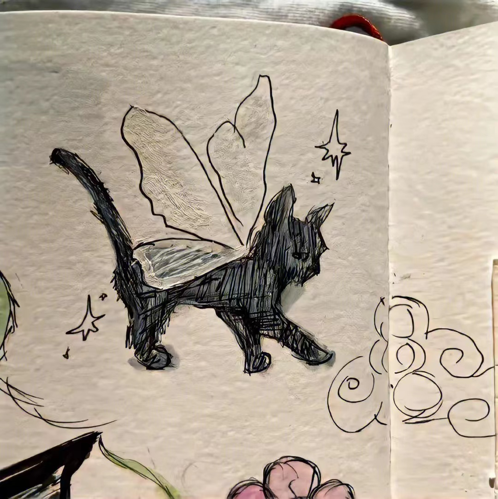

未来一片迷茫，我只好带上坚强勇敢去闯。

大家好，我叫杨锐，今年20岁。我就读于成都东软学院，主修艺术与科技。在课余时间，我喜欢打羽毛球、听音乐和看动漫。我和在座的同学们一样，渴望展翅高飞，渴望将来有更大的发展空间，有施展才华的更广阔的天地。我想，有耕耘就会有收获。未来的四年里，由各位老师的倾情传授，我们必须会有一个无限完美的未来。
大学校园就是一个大家庭。在这个大家庭中，我们扮演着被培养对象的角色。老师是我们的长辈，所以我对他们尊敬有加。同学们就像兄弟姐妹，我们一起学习，一起娱乐，互帮互助，和睦的相处。集体生活使我懂得了要主动去体谅别人和关心别人，也使我变得更加坚强和独立。我觉得自己的事情就应该由自己负责，别人最多只能给你一些建议。遇到事情不要急躁，要冷静地思考。不轻易的承诺，承诺了就要努力去兑现。生活需要自己来勾画，不一样的方式就有不一样的人生。
我们既然有缘相聚在一班，所以对一些同学有了一定的认识和了解，也成为了朋友，希望我们大家能继续相互鼓励，共同成长。在花季和雨季有我们最深的情谊，也很高兴能和你们成为同学，希望大家以后在学习上相互帮助。